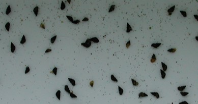
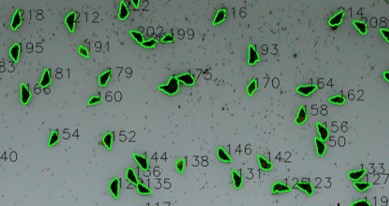
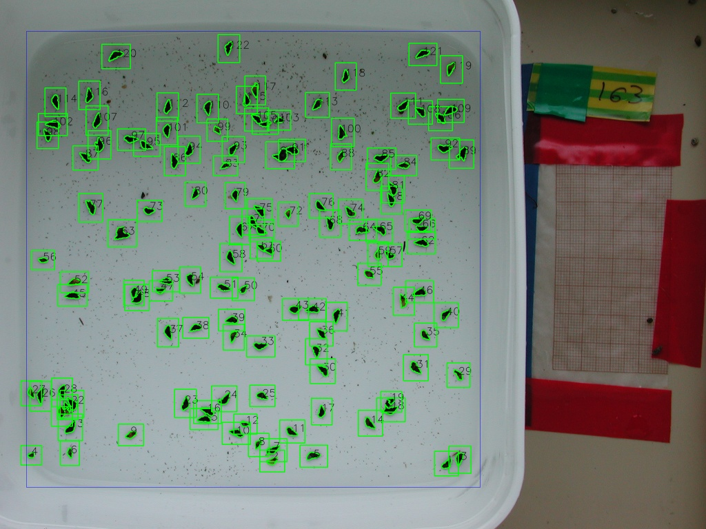

Example 6: Counting and measuring freshwater snails¶
In this example we will use thresholding and watershed algorithms to count freshwater snails.

Input - Snails photographed from a camera stand. Variable brightness across the tray and snail clumping are the biggest challenges.

Results - After applying adaptive thresholding and a watershed algorithm, the snail separate well from the background. Now we can count them, and measure size, shape and colouration
Low throughput¶
First, we test a single image with the low throughput workflow.
[1]:
import phenopype as pp
import os
[2]:
filepath = "images/snails1.jpg"
image, img_data = pp.load_image(filepath,
df=True)
pp.show_image(image)
Begin by drawing a mask around the snails inside the tray by dragging a rectangle around them - finish with Enter, abort with Esc.
[3]:
df_masks = pp.preprocessing.create_mask(image)
- creating mask
Now we need to measure the pixel-to-mm-ratio. The snail pictures don’t contain a scale that is appropriate for automatic detection - the millimeter-paper on the side does not contain enough unique keypoints to be detected automatically (for cases where this works see Example 1 and [Example 2])(example_2_landmarks_stickleback.ipynb). Therefore each image needs to be manually measured by dragging a line across the mm-paper, and entering the distance.
Note: It is better to measure a long distance than a short distance to minimize the measurement error - use the full length (~70 mm) here.
[4]:
img_data = pp.preprocessing.create_reference(image,
img_data)
- measure pixel-to-mm-ratio
Reference set
- add column length
For high data quality it is important to verify the ID of the specimen in the current picture. Often, the picture name contains the ID, but typically an label is placed inside the image. Using the enter_data tool we open the image and an entry prompt that will create a column with a name of our chosing inside all exported results.
[5]:
img_data = pp.preprocessing.enter_data(image,
img_data,
columns="ID")
- add column ID
Next is segmentation. First we blur the image a little, convert it to a binary image, and look at the results:
[7]:
image_blurred = pp.segmentation.blur(image)
image_bin = pp.segmentation.threshold(image_blurred,
df_masks=df_masks,
method="adaptive",
blocksize=59, ## relatively low sensitivity
constant=10) ## constant gets subtracted from the binary result
pp.show_image(image_bin)
- including pixels from 1 drawn masks
The break up the clumping, we apply the watershed algorithm to the binarized image:
[8]:
image_bin = pp.segmentation.watershed(image,
image_thresh=image_bin,
distance_cutoff=0.5) # , iterations=1, kernel_size=1
pp.show_image(image_bin)
- found 214 contours that match criteria
[9]:
df_contours = pp.segmentation.find_contours(image_bin,
min_area=150) # needs to be "child" for watershed
- found 107 contours that match criteria
With the contours we have acquired the primary information (counts, size, area) contained in the image. However, since we have the contour location, we get the colour for free. Note that we also measure the background whiteness of each scale (background=True). This is important, as the snails lie across a brightness gradient within the images.
[10]:
pp.measurement.colour_intensity(image,
img_data,
df_contours,
background=True) # this measures the whiteness of the area around each detected snails
[10]:
| filename | width | height | px_mm_ratio | ID | contour | gray_mean | gray_sd | gray_mean_b | gray_sd_b | |
|---|---|---|---|---|---|---|---|---|---|---|
| 0 | snails1.jpg | 2048 | 1536 | 8.301071 | 163 | 1 | 17.473 | 8.77379 | 143.837 | 36.8937 |
| 1 | snails1.jpg | 2048 | 1536 | 8.301071 | 163 | 2 | 75.2904 | 23.4319 | 156.452 | 30.2478 |
| 2 | snails1.jpg | 2048 | 1536 | 8.301071 | 163 | 3 | 14.6265 | 7.2387 | 137.795 | 36.1294 |
| 3 | snails1.jpg | 2048 | 1536 | 8.301071 | 163 | 4 | 32.4597 | 18.9484 | 160.683 | 28.7027 |
| 4 | snails1.jpg | 2048 | 1536 | 8.301071 | 163 | 5 | 20.8357 | 6.70049 | 150.752 | 36.5441 |
| ... | ... | ... | ... | ... | ... | ... | ... | ... | ... | ... |
| 102 | snails1.jpg | 2048 | 1536 | 8.301071 | 163 | 103 | 8.66171 | 2.80216 | 98.9212 | 22.494 |
| 103 | snails1.jpg | 2048 | 1536 | 8.301071 | 163 | 104 | 33.8171 | 11.4594 | 97.1136 | 15.8264 |
| 104 | snails1.jpg | 2048 | 1536 | 8.301071 | 163 | 105 | 11.7825 | 4.91391 | 92.8656 | 20.6969 |
| 105 | snails1.jpg | 2048 | 1536 | 8.301071 | 163 | 106 | 9.56656 | 3.64157 | 94.618 | 21.66 |
| 106 | snails1.jpg | 2048 | 1536 | 8.301071 | 163 | 107 | 9.02029 | 3.80726 | 98.5129 | 19.3734 |
107 rows × 10 columns
Now we draw the contours…
[11]:
canvas = pp.visualization.select_canvas(image, # onto which image should the contours be draw
canvas="raw") # raw = original image
canvas = pp.visualization.draw_contours(canvas,
df_contours,
fill=0,
line_width=2,
watershed=True, # this flag needs to be added when using watershedding
bounding_box=True) # this indicates the area where the background was measured
pp.show_image(canvas)
- raw image
… and save them, as well as the masks (if we need to redo this) and the canvas for quality control.
[12]:
pp.export.save_canvas(canvas, dirpath="_temp/output/ex6")
pp.export.save_masks(df_masks, dirpath="_temp/output/ex6")
pp.export.save_contours(df_contours, dirpath="_temp/output/ex6")
- canvas saved under _temp/output/ex6\canvas.jpg (overwritten).
- masks saved under _temp/output/ex6\masks.csv (overwritten).
- contours saved under _temp/output/ex6\contours.csv (overwritten).
Note: the countour csv contains only the inner, watershedded contours (separated=“child”), the outer (unseparated=“parent”) were removed with find_contours.
High throughput¶
As for the other examples I have created a template (ex6) with appropriate settings for the example. The template can be passed to the pype using template="ex6" - see below.

Because there is a brightness gradient across the image, correcting the exposure across all images will not work. Instead we use the colour_intensity to return the local background whiteness (within the rectangle, excluding all snail pixels). Each snail will have an individual background brightness score that can be used to normalize the detected values, so that the colour intensity becomes a meaningful trait within and across images.
First, set some directories and inspect the template:
[13]:
import phenopype as pp
import os
project_root = r"_temp/output/ex6_proj"
images = r"images"
pp.show_config_template("ex6")
SHOWING BUILTIN PHENOPYPE TEMPLATE ex6.yaml
- preprocessing:
- create_mask
- create_reference
- enter_data
- segmentation:
- blur:
kernel_size: 3
- threshold:
method: adaptive
blocksize: 59
constant: 10
channel: gray
- watershed:
distance_cutoff: 0.5
# - draw # to separate snails
- find_contours:
retrieval: ccomp # needs to be ccomp for watershed
min_diameter: 0
min_area: 200
subset: child # needs to be child for watershed
- measurement:
- colour_intensity:
background: true
- visualization:
- select_canvas:
canvas: raw
- draw_contours:
line_width: 2
label_width: 1
label_size: 1
fill: 0
watershed: true
bounding_box: true
- draw_masks
- export:
- save_contours:
save_coords: false
- save_colours
- save_masks
Then create a project. As stated above in the low throughput instructions: defining a project wide scale will not work because the provided reference card is too homogeneous, i.e. does not contain enough keypoints for registration by find_scale. If you already have created the project, simply load it.
[14]:
if not os.path.isdir(project_root):
proj = pp.project(root_dir=project_root,
overwrite=True)
proj.add_files(image_dir=images,
include="snails",
overwrite=True)
proj.add_config(name = "v1",
overwrite=True,
template="ex6")
pp.project.save(proj,
overwrite=True)
else:
proj = pp.project.load(project_root)
--------------------------------------------
Project loaded from
D:\workspace\git\phenopype\tutorials\_temp\output\ex6_proj
Project has 2 image folders
--------------------------------------------
Now you can loop through all directories stored within the project object to detect the snails.
[15]:
for i in proj.dirpaths:
p = pp.pype(i, name="v1")
Succesfully loaded existing pype config (pype_config_v1.yaml) from:
D:\workspace\git\phenopype\tutorials\_temp\output\ex6_proj\data\0__snails1\pype_config_v1.yaml
------------+++ new pype iteration 2021:05:10 16:11:10 +++--------------
=== AUTOLOAD ===
- columns ID from attributes.yaml
- masks_v1.csv
PREPROCESSING
create_mask
- mask with label mask1 already created (edit/overwrite=False)
create_reference
- measure pixel-to-mm-ratio
Reference set
- add column length
enter_data
- column ID already created (overwrite=False)
SEGMENTATION
blur
threshold
- including pixels from 1 drawn masks
watershed
- found 223 contours that match criteria
find_contours
- found 102 contours that match criteria
MEASUREMENT
colour_intensity
VISUALIZATION
select_canvas
- raw image
draw_contours
draw_masks
drawing mask: mask1
EXPORT
save_contours
- contours saved under D:\workspace\git\phenopype\tutorials\_temp\output\ex6_proj\data\0__snails1\contours_v1.csv (overwritten).
save_colours
- colours saved under D:\workspace\git\phenopype\tutorials\_temp\output\ex6_proj\data\0__snails1\colours_v1.csv (overwritten).
save_masks
- masks saved under D:\workspace\git\phenopype\tutorials\_temp\output\ex6_proj\data\0__snails1\masks_v1.csv (overwritten).
=== AUTOSAVE ===
save_canvas
- canvas saved under D:\workspace\git\phenopype\tutorials\_temp\output\ex6_proj\data\0__snails1\canvas_v1.jpg (overwritten).
save_data_entry
- add column ID (overwriting)
------------+++ finished pype iteration +++--------------
-------(End with Ctrl+Enter or re-run with Enter)--------
------------+++ new pype iteration 2021:05:10 16:11:25 +++--------------
Nothing loaded.
PREPROCESSING
create_mask
- mask with label mask1 already created (edit/overwrite=False)
create_reference
- measure pixel-to-mm-ratio
preprocessing.create_reference: AttributeError - '_image_viewer' object has no attribute 'reference_coords'
enter_data
- column ID already created (overwrite=False)
SEGMENTATION
blur
threshold
- including pixels from 1 drawn masks
watershed
- found 223 contours that match criteria
find_contours
- found 102 contours that match criteria
MEASUREMENT
colour_intensity
VISUALIZATION
select_canvas
- raw image
draw_contours
draw_masks
drawing mask: mask1
EXPORT
save_contours
- contours saved under D:\workspace\git\phenopype\tutorials\_temp\output\ex6_proj\data\0__snails1\contours_v1.csv (overwritten).
save_colours
- colours saved under D:\workspace\git\phenopype\tutorials\_temp\output\ex6_proj\data\0__snails1\colours_v1.csv (overwritten).
save_masks
- masks saved under D:\workspace\git\phenopype\tutorials\_temp\output\ex6_proj\data\0__snails1\masks_v1.csv (overwritten).
=== AUTOSAVE ===
save_canvas
- canvas saved under D:\workspace\git\phenopype\tutorials\_temp\output\ex6_proj\data\0__snails1\canvas_v1.jpg (overwritten).
save_data_entry
- add column ID (overwriting)
------------+++ finished pype iteration +++--------------
-------(End with Ctrl+Enter or re-run with Enter)--------
TERMINATE
Succesfully loaded existing pype config (pype_config_v1.yaml) from:
D:\workspace\git\phenopype\tutorials\_temp\output\ex6_proj\data\0__snails2\pype_config_v1.yaml
------------+++ new pype iteration 2021:05:10 16:11:30 +++--------------
Nothing loaded.
PREPROCESSING
create_mask
- creating mask
An exception has occurred, use %tb to see the full traceback.
SystemExit:
TERMINATE (by user)
WARNING: To exit: use 'exit', 'quit', or Ctrl-D.
In the end, use the collect_results method of proj to save all results to a folder in the root directory.
[16]:
proj.collect_results(name="v1",
files=["contours"],
folder="contours_ref",
overwrite=True)
Created D:\workspace\git\phenopype\tutorials\_temp\output\ex6_proj\contours_ref
['contours_v1']
Collected contours_v1.csv from 0__snails1
0__snails1_contours_v1.csv saved under D:\workspace\git\phenopype\tutorials\_temp\output\ex6_proj\contours_ref\0__snails1_contours_v1.csv.
[ ]: